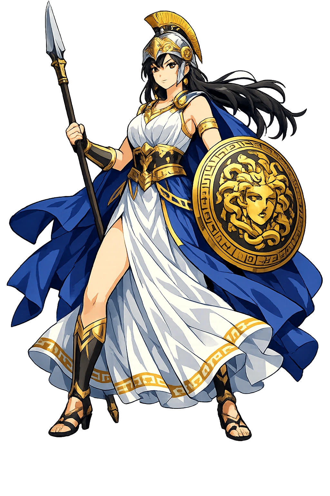

Athēnâ through the eyes of sculptors, painters, and craftsmen across the ages

Athena Parthenos — Alan LeQuire replica, Nashville Parthenon. The colossal gold-and-ivory original by Phidias stood 12 meters tall.

Athena of Velletri — Roman copy of a Greek original. The aegis raised, the Gorgoneion at her breast, eyes that see everything.

Pallas Athena — Velletri type, Glyptothek, Munich. The spear rests against her shoulder. She does not need to raise it.

Athena Giustiniani — Vatican Museums. The aegis draped over her shoulders, the owl at her feet. Wisdom made stone.

Athena Promachos — Attic black-figure by the Burgon Group, c. 560 BCE. "She who fights in the front line." Public domain via Wikimedia Commons.

Athena Lemnia — Phidias's lost masterpiece, reconstructed. The most beautiful Athena ever made.

Athena and Marsyas — Mykonos vase, c. 440 BCE. The moment before the satyr is flayed for challenging the gods.

The Birth of Athena — Black-figure amphora, c. 550 BCE. Louvre, Paris (F 32). She springs fully armed from Zeus's head. Public domain via Wikimedia Commons.

Helmeted Athena — National Archaeological Museum, Athens (inv. 1763). The face beneath the Corinthian helmet: calm, knowing, and utterly unafraid. Public domain via Wikimedia Commons.